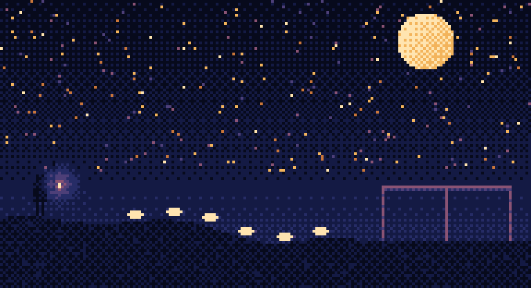
sky-0of6.png · night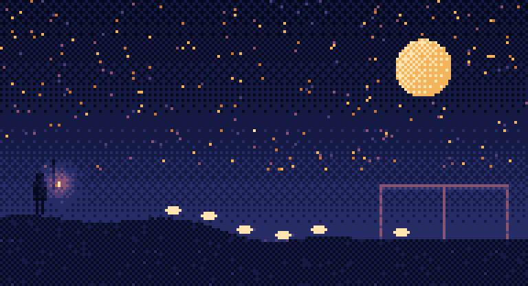
sky-1of6.png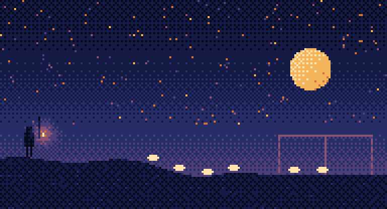
sky-2of6.png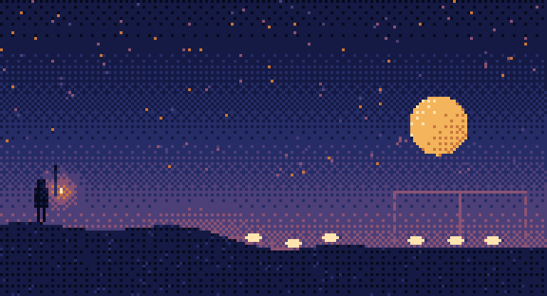
sky-3of6.png · first light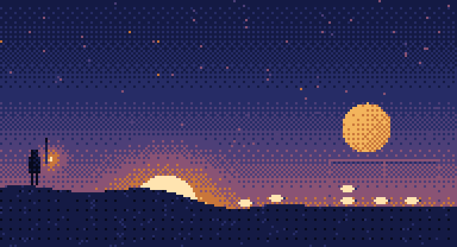
sky-4of6.png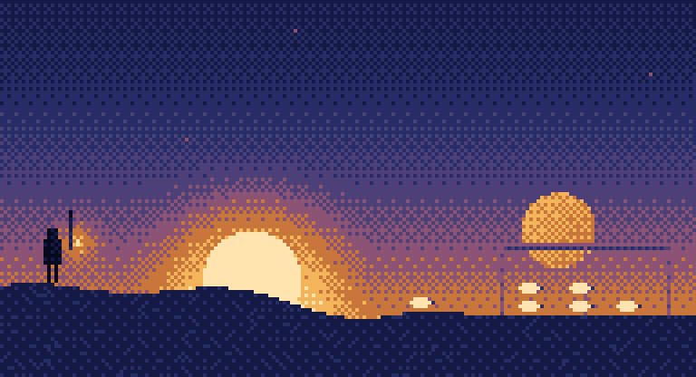
sky-5of6.png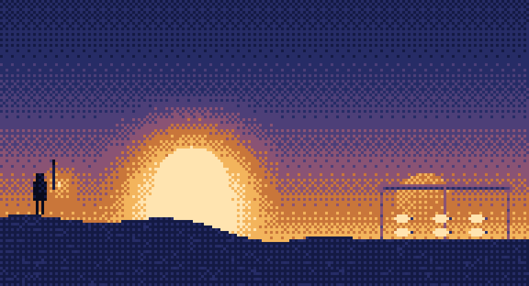
sky-6of6.png · dawn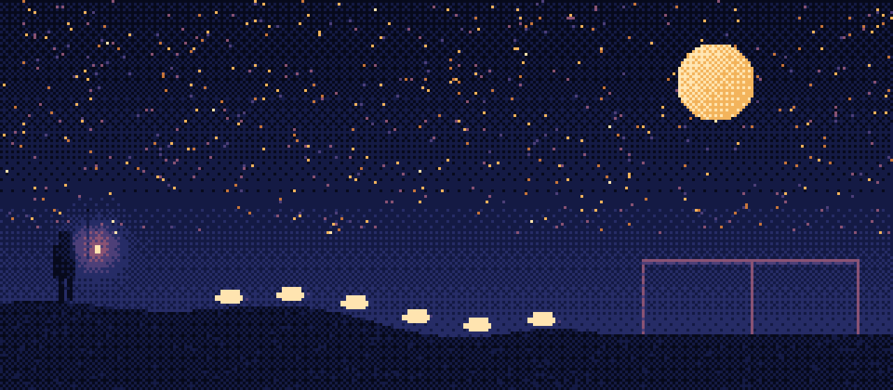
hero-night.png · 1280 × 560 · landing hero, overview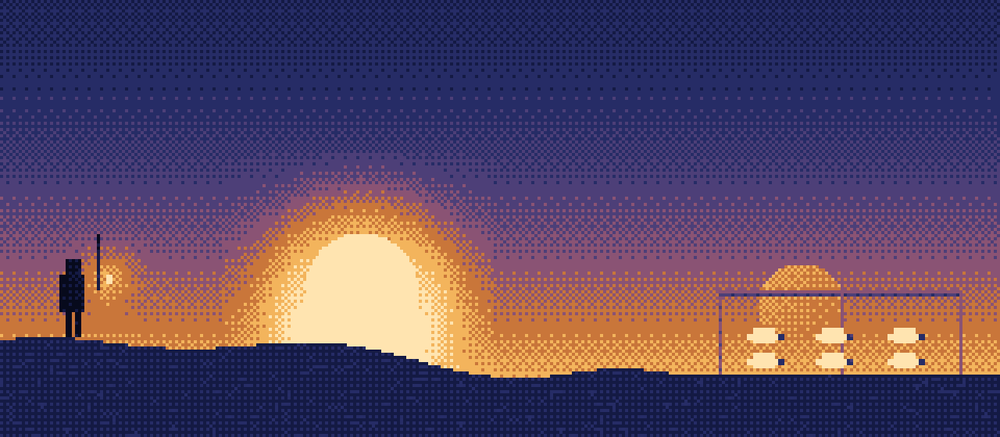
hero-dawn.png · 1280 × 560 · dawn screen, landing close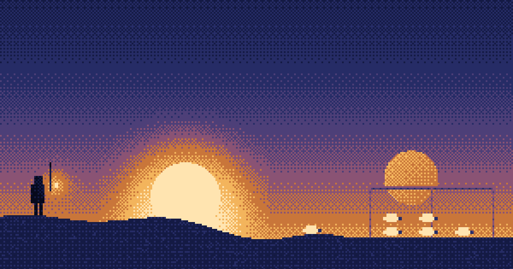
share-bg.png · 1200 × 630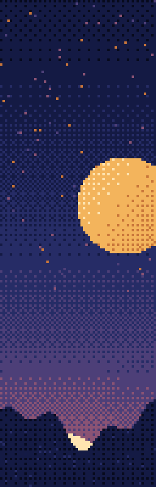
sidebar-sky.png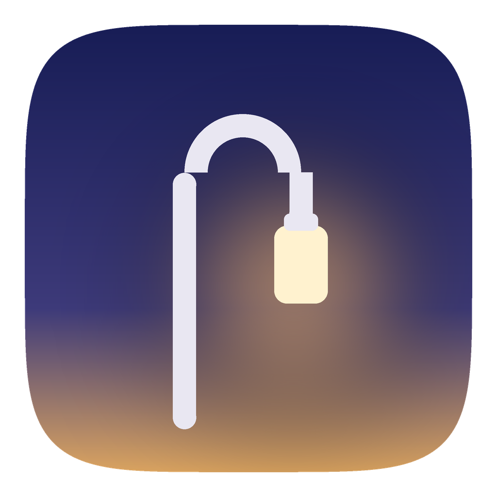
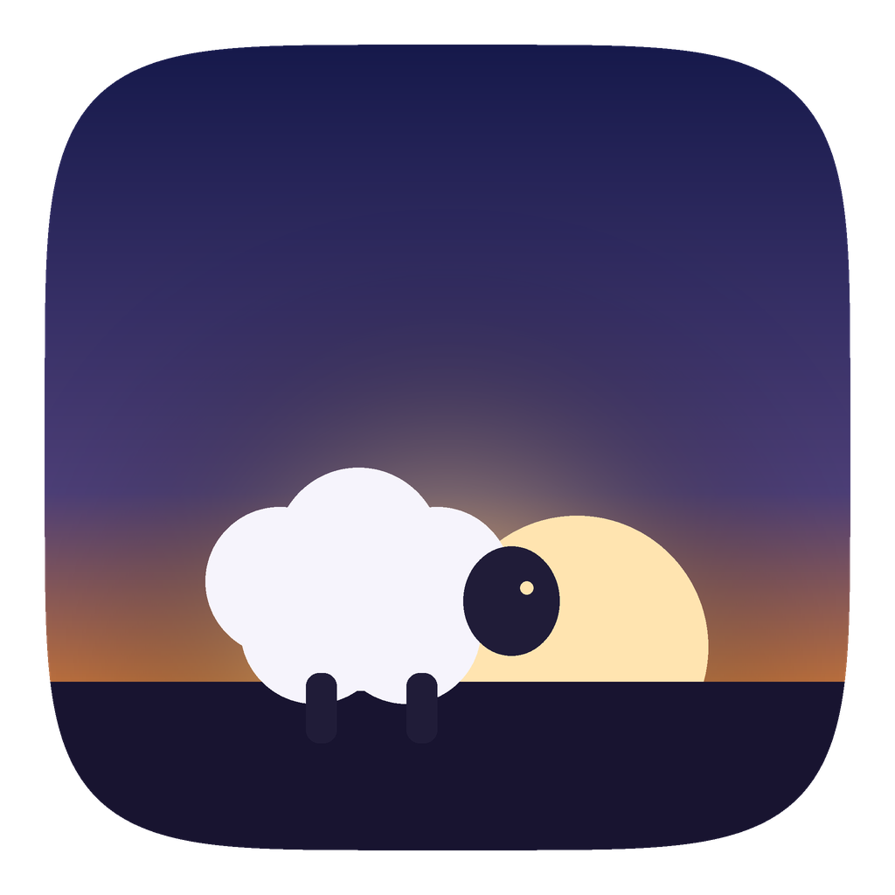